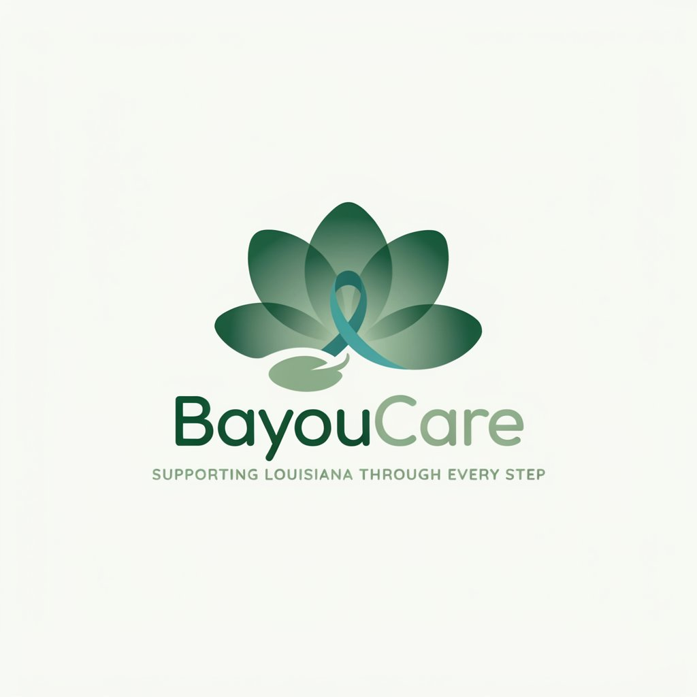

DevDays Louisiana · Ochsner Health challenge
Making cancer care easier to navigate — wherever patients live.
The problem
Louisiana context: rural distance, fragmented tools, delayed recognition of concerning symptoms.
The patient is often responsible for connecting a healthcare system that was never designed to feel connected.
The solution
BayouCare connects the person receiving care with the people responsible for delivering it.
How it works
Symptoms and how they’re feeling — in minutes, on a phone.
BayouCare flags concerning changes that need attention.
Earlier visibility between visits — not after an ER trip.
Rides, caregivers, clinics, and resources can move together.
Parish insights show where patients struggle geographically.
Product
Check-ins, vitals, family help, Remi guidance — what matters today.
Live in demo7-day risk with a prescription, prior-auth, schedule risk — one model.
Live in demoUnmet-need heat index — outreach follows burden, not city size.
Live in demoWhy BayouCare is different
Symptom awareness, plain-language guidance, family support on a phone.
Risk forecasts with actionable next steps, shared with clinic ops.
Louisiana parish visibility so resources follow unmet need.
One care story across three altitudes of healthcare.
Technology
Impact
Less confusion navigating care.
Better visibility between visits.
Clearer view of where support is needed.
Start with Louisiana. Build a model that can scale anywhere geography makes healthcare harder to reach.
Next step: pilot BayouCare with healthcare partners and real patient-navigation workflows.
Cancer is difficult enough. Navigating care shouldn’t be.
BayouCare · DevDays 2026